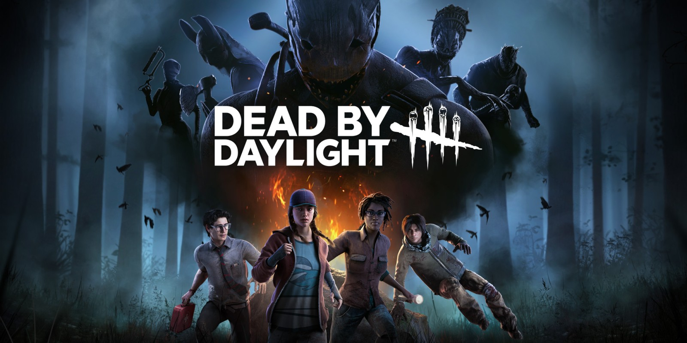

Dead By Daylight
4 Supervivientes VS 1 Asesino

¿Que es Dead By Daylight?
Es un videojuego multijugador en línea de 1 contra 4, en el que cuatro jugadores toman el papel de supervivientes y uno el de asesino. Tanto los objetivos del videojuego como la perspectiva de los dos tipos de jugadores son distintos, los supervivientes se concentran en escapar mientras que el asesino debe darles caza para sacrificarlos al Ente.

Podrás escapar?
Los supervivientes juegan en tercera persona y tienen la ventaja de contar con una mejor percepción del entorno. El asesino juega en primera persona y está más enfocado en su presa.

El objetivo del superviviente en cada encuentro es escapar del área de matanza sin que lo capture el asesino, algo que suena más fácil de lo que es, especialmente con un entorno que cambia cada vez que juegas.